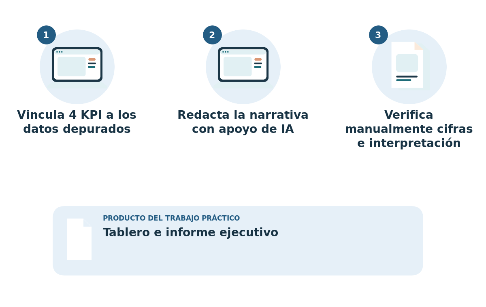

<div style="font-family: 'Segoe UI', Arial, sans-serif; color: #333; line-height: 1.6; max-width: 100%; margin-bottom: 20px;">
  <div style="background-color: #ffffff; background-image: linear-gradient(135deg, #ffffff 0%, #f8f9fa 100%); border: 1px solid #dee2e6; border-radius: 15px; padding: 25px 30px; box-shadow: 0 4px 12px rgba(0,0,0,0.05); position: relative; overflow: hidden;">
    <div style="position: absolute; left: 0; top: 0; bottom: 0; width: 6px; background: #0056b3;" aria-hidden="true"> </div>
    <div style="position: relative; z-index: 1;">
<h2 style="color: #1c3055; margin-top: 0; font-size: 1.4rem; font-weight: bold;">Entrega del Trabajo Práctico-Experimental de la Unidad 3</h2>
<p></p>

<p><strong>Asignatura:</strong> IA aplicada al análisis de datos y soporte a la decisión<br>
<strong>Actividad: Tablero comercial e informe de ventas</strong><br><strong>Evidencia:</strong> Un libro con cuatro indicadores, al menos tres gráficos, filtros y un informe breve comprobado con los datos.</p>
<p>Usa las ventas corregidas de la unidad 2. La gerencia de AndesMulti necesita un tablero que permita comparar ventas sin mezclar periodos. Un informe anterior contenía cifras y causas que el asistente no había comprobado.</p>
<p><strong>Qué completar</strong></p>
<ol><li>Elige cuatro indicadores y anota para cada uno su propósito, fórmula, unidad, periodo y fuente. Resume por canal, ciudad, producto y grupo de clientes. Mantén V052 separada de las ventas brutas y V028 fuera del promedio de importes.</li><li>Crea la pestaña 05_Tablero_Comercial con los cuatro indicadores, al menos tres gráficos y filtros por ciudad o canal. Muestra la unidad y el periodo de cada dato.</li><li>Calcula a mano al menos un indicador y comprueba que coincida con el tablero. Usa el mismo periodo y el mismo conjunto de registros en ambas cuentas.</li><li>Comparte con el asistente solo resúmenes sin nombres personales. Pide un borrador de tres párrafos: qué lidera las ventas, dónde hay diferencias y qué mejora comercial sugieren los datos.</li><li>Revisa cada cifra del borrador. Corrige redondeos y retira causas que los datos no demuestran. Explica las limitaciones y registra cuántas consultas necesitaste para evitar repeticiones innecesarias.</li><li>Comprueba los gráficos y filtros al abrir el archivo. Reúne el informe, la consulta enviada, las correcciones y la cuenta manual. Cita las lecturas y explica qué error evitaste al comprobar los resultados.</li></ol>
<p><strong>Cómo entregar</strong></p>
<p>Entrega tu trabajo una sola vez al cierre de la semana 6. En esta Tarea de Moodle, selecciona <strong>Agregar entrega</strong>, adjunta tu evidencia y pulsa <strong>Guardar cambios</strong>. Si aparece <strong>Enviar tarea</strong>, púlsalo y comprueba el estado.</p>
<p><strong>Nombre del expediente:</strong> Apellido_Nombre_Trabajo_experimental_Unidad_3.</p>
<p><strong>Formato:</strong> Entrega el libro editable y el informe en la misma entrega. Puedes incluir el informe en una pestaña del libro si el docente lo permite.</p>
<p>Conserva el registro original del caso y anota las correcciones en tu expediente. Entrega el trabajo autónomo por separado.</p>
<details><summary style="color:#0056b3;font-weight:bold;cursor:pointer;">Rúbrica de la práctica · 16 puntos</summary><div style="overflow-x:auto;"><table class="table" style="width:100%;border-collapse:collapse;font-size:.9rem;"><thead><tr><th scope="col" style="padding:8px;background:#eef4fb;text-align:left;">Criterio y puntaje máximo</th><th scope="col" style="padding:8px;background:#eef4fb;text-align:left;">Completo (4 puntos · 100 %)</th><th scope="col" style="padding:8px;background:#eef4fb;text-align:left;">Adecuado (3 puntos · 75 %)</th><th scope="col" style="padding:8px;background:#eef4fb;text-align:left;">Parcial (2 puntos · 50 %)</th><th scope="col" style="padding:8px;background:#eef4fb;text-align:left;">Inicial (1 punto · 25 %)</th><th scope="col" style="padding:8px;background:#eef4fb;text-align:left;">Ausencia (0 puntos · 0 %)</th></tr></thead><tbody><tr><td style="padding:8px;border-bottom:1px solid #dee2e6;vertical-align:top;">1. Pertinencia del análisis <strong>(4 puntos)</strong></td><td style="padding:8px;border-bottom:1px solid #dee2e6;vertical-align:top;">Define los 4 indicadores con fórmula, unidad, periodo y registros válidos para el cálculo.</td><td style="padding:8px;border-bottom:1px solid #dee2e6;vertical-align:top;">Define los 4 indicadores y respeta el periodo con leves omisiones al explicar qué registros excluyó del cálculo.</td><td style="padding:8px;border-bottom:1px solid #dee2e6;vertical-align:top;">Incluye menos de 4 indicadores o mezcla bases distintas entre métricas generando comparaciones imprecisas.</td><td style="padding:8px;border-bottom:1px solid #dee2e6;vertical-align:top;">Hay un intento evaluable. Presenta indicadores sin fórmula clara, con errores graves de cálculo o mezclando periodos distintos.</td><td style="padding:8px;border-bottom:1px solid #dee2e6;vertical-align:top;">No presenta evidencia del criterio «Pertinencia del análisis» que permita evaluarlo.</td></tr><tr><td style="padding:8px;border-bottom:1px solid #dee2e6;vertical-align:top;">2. Aplicación conceptual <strong>(4 puntos)</strong></td><td style="padding:8px;border-bottom:1px solid #dee2e6;vertical-align:top;">Construye un tablero con gráficos y filtros, comprueba a mano un indicador y corrige el informe sugerido por el asistente.</td><td style="padding:8px;border-bottom:1px solid #dee2e6;vertical-align:top;">Construye el tablero con gráficos adecuados y verificación básica, con pequeños desajustes en interactividad o contraste manual.</td><td style="padding:8px;border-bottom:1px solid #dee2e6;vertical-align:top;">Presenta gráficos estáticos poco adecuados para las variables o copia la texto del asistente sin verificar cifras ni corregir suposiciones.</td><td style="padding:8px;border-bottom:1px solid #dee2e6;vertical-align:top;">Hay un intento evaluable. No construye el tablero funcional en hoja de cálculo ni contrasta las cifras generadas por el asistente.</td><td style="padding:8px;border-bottom:1px solid #dee2e6;vertical-align:top;">No presenta evidencia del criterio «Aplicación conceptual» que permita evaluarlo.</td></tr><tr><td style="padding:8px;border-bottom:1px solid #dee2e6;vertical-align:top;">3. Calidad del entregable <strong>(4 puntos)</strong></td><td style="padding:8px;border-bottom:1px solid #dee2e6;vertical-align:top;">Integra libro dinámico limpio, verificación manual, instrucción utilizada y informe breve claro en un solo envío bien estructurado.</td><td style="padding:8px;border-bottom:1px solid #dee2e6;vertical-align:top;">Entrega tablero e informe con pequeños detalles de estética visual, rotulación de ejes o redacción del informe.</td><td style="padding:8px;border-bottom:1px solid #dee2e6;vertical-align:top;">Entrega elementos incompletos, gráficos sin títulos de contexto o un reporte desconectado de las tablas del libro.</td><td style="padding:8px;border-bottom:1px solid #dee2e6;vertical-align:top;">Hay un intento evaluable. Presenta archivos rotos, sin fórmulas vinculadas o carentes de informe interpretativo.</td><td style="padding:8px;border-bottom:1px solid #dee2e6;vertical-align:top;">No presenta evidencia del criterio «Calidad del entregable» que permita evaluarlo.</td></tr><tr><td style="padding:8px;border-bottom:1px solid #dee2e6;vertical-align:top;">4. Uso de fuentes y referencias <strong>(4 puntos)</strong></td><td style="padding:8px;border-bottom:1px solid #dee2e6;vertical-align:top;">Respalda el diseño visual y narrativo en las lecturas base (Juca-Maldonado; García Alvarado) bajo formato de citas de la guía y rotula datos simulados.</td><td style="padding:8px;border-bottom:1px solid #dee2e6;vertical-align:top;">Cita las fuentes pertinentes y declara asistencia digital con ligeras imprecisiones en la lista de referencias.</td><td style="padding:8px;border-bottom:1px solid #dee2e6;vertical-align:top;">Vincula de forma débil el diseño del tablero con la bibliografía del curso o comete errores frecuentes de citación.</td><td style="padding:8px;border-bottom:1px solid #dee2e6;vertical-align:top;">Hay un intento evaluable. Omite atribución bibliográfica, inventa citas o presenta la explicación del caso ficticio como estudio con datos reales.</td><td style="padding:8px;border-bottom:1px solid #dee2e6;vertical-align:top;">No presenta evidencia del criterio «Uso de fuentes y referencias» que permita evaluarlo.</td></tr></tbody></table></div></details>
    </div>
  </div>
</div>

